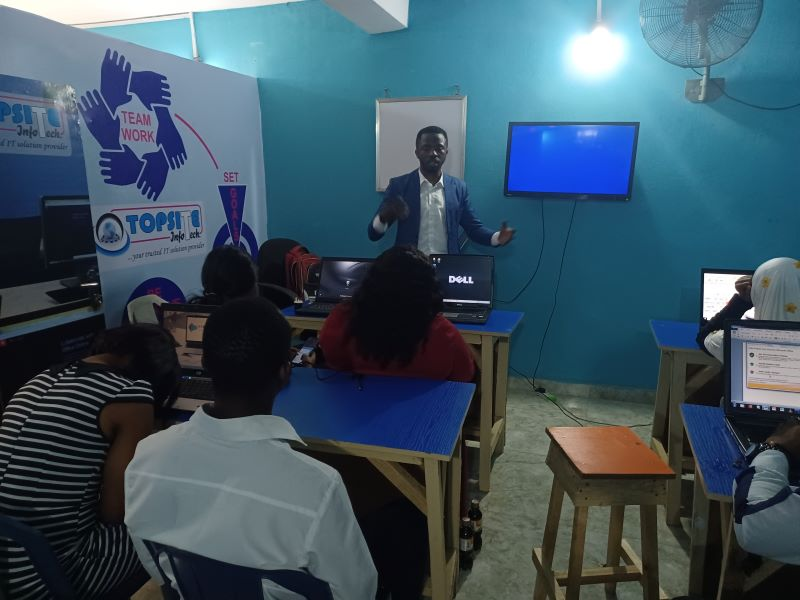

Ajayi Temitope Biography
Meet Ajayi Temitope
Ajayi Temitope's story is one of resilience, determination, and a relentless pursuit of excellence. Born and raised in Nigeria, Ajayi's journey began with a thirst for knowledge and a love for technology that would shape his path for years to come. From his humble beginnings, he embarked on a quest to merge his passion for education with his innate talent for computer operations and graphics design.

Over the years, Ajayi has worn many hats – from educator to entrepreneur, mentor to innovator. His journey has taken him across continents, from the bustling streets of Lagos to the serene landscapes of Finland, where he currently resides. Along the way, he has embraced every opportunity to learn, grow, and make a meaningful impact in the world.
Driven by a deep sense of purpose and guided by a vision of a better tomorrow, Ajayi's journey is far from over. With each new experience, he continues to push the boundaries of what's possible, challenging himself and those around him to dream bigger, aim higher, and never settle for mediocrity.